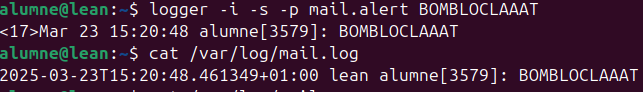
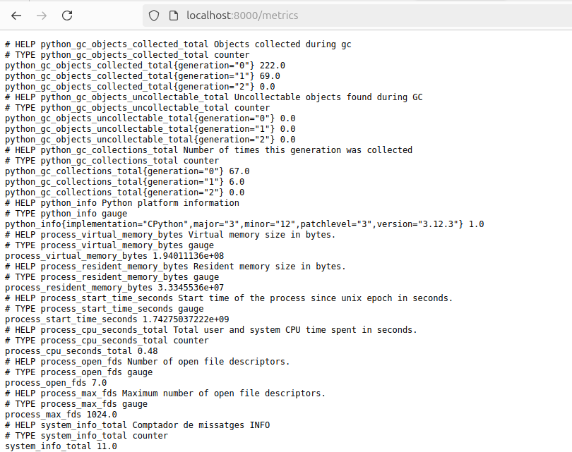
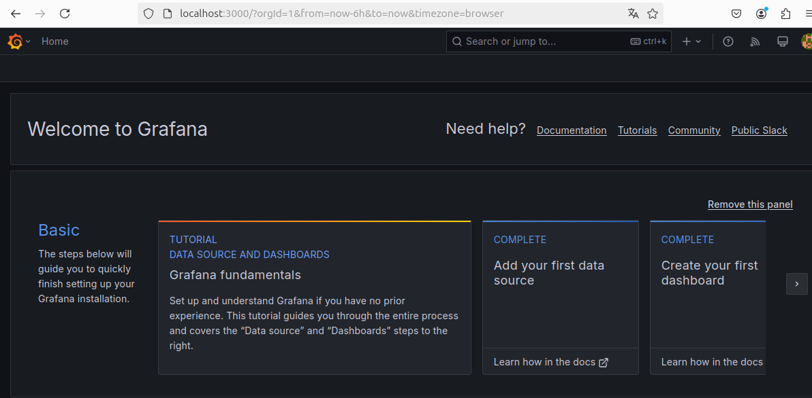

Monitoratge i Gestió de Logs
Introducció als Logs
Els logs són fitxers que registren totes les activitats i esdeveniments d'un sistema. Són essencials per:
- Diagnosticar problemes i errors.
- Monitoritzar el rendiment dels serveis.
- Auditar accessos i detectar possibles amenaces.
- Depurar aplicacions en desenvolupament.
Gestió i Rotació de Logs
Els logs es guarden generalment a /var/log/, i cada servei té el seu propi fitxer de registre. Per evitar que aquests fitxers es facin massa grans, s'utilitza una política de rotació que permet mantenir un historial dels logs antics.
Per gestionar la rotació de logs, edita el fitxer de configuració global:
sudo nano /etc/logrotate.conf
Si vols definir una configuració específica per a un servei concret, accedeix al directori:
cd /etc/logrotate.d/
Exemple: La configuració per a bootlog està definida perquè els seus logs es rotin cada 7 dies.
Anàlisi de Logs
Per consultar logs, es poden utilitzar eines bàsiques com cat, però una eina més potent és journalctl, que permet aplicar filtres per rangs de temps:
journalctl --since "12:00" --until "14:00"
També es poden consultar registres associats a un dispositiu concret:
journalctl /dev/sda
Personalització de Logs
És possible modificar el comportament dels logs per adaptar-los a les necessitats del sistema. Això inclou canviar la seva configuració, definir com es gestionen i enviar-los a un servidor centralitzat.
Per modificar la configuració de rsyslog, edita el fitxer corresponent:
sudo nano /etc/rsyslog.d/50-default.conf
Per enviar un missatge d'error personalitzat al sistema de logs:
logger -i -s -p user.err "Prova d'error"
Com podem veure el missatge es registra al log de error mail.err i no en mail.log, aquest fest passa ja que tenim assignat una destinacio especifica per al log
Com podem veure aqui al fer una alterta el missatge es registra en mail.log

Grafana, Prometheus, Flask
En aquest apartat, t'explicaré les parts més importants d'un sistema de monitorització centralitzat utilitzant Grafana, Prometheus i Flask.
-
Grafana és l'eina de visualització que permet crear panells interactius i personalitzats per analitzar i mostrar les dades de manera efectiva. Amb Grafana, pots crear gràfics, taules i alertes basades en les mètriques recollides.
-
Prometheus és el sistema de monitorització i emmagatzematge de mètriques. Recull dades de diferents fonts (com aplicacions, servidors o serveis) i les emmagatzema en una base de dades de sèries temporals. Prometheus és especialment útil per monitoritzar el rendiment i l'estat dels sistemes en temps real.
-
Flask és un framework lleuger de Python que pots utilitzar per crear aplicacions web. En el context de la monitorització, Flask pot ser utilitzat per exposar mètriques personalitzades que Prometheus pot recollir. Això és especialment útil quan vols monitoritzar aplicacions personalitzades o processos específics.
Instal·lació de Grafana al servidor
Per començar, cal instal·lar les eines necessàries per afegir repositoris de programari:
sudo apt install -y software-properties-common
A continuació, afegim el repositori oficial de Grafana:
sudo add-apt-repository "deb https://packages.grafana.com/oss/deb stable main"
Després, afegim la clau GPG per verificar la integritat dels paquets:
wget -q -O - https://packages.grafana.com/gpg.key | sudo apt-key add -
Ara, podem instal·lar Grafana:
sudo apt install -y grafana
Finalment, activem i iniciem el servei de Grafana per assegurar-nos que s'executi al moment d'iniciar el sistema:
sudo systemctl enable grafana-server
sudo systemctl start grafana-server
Crear entorn virtual per a python
Crearem el directori on treballarem amb el script de python
Creem el entorn virtual e installem les llibreries necesaries
Crearem el nostre script de python:
import time
import re
import os
import subprocess
from flask import Flask, Response
from prometheus_client import Counter, Gauge, generate_latest
# Crear aplicació Flask
app = Flask(__name__)
# Definir mètriques Prometheus
info_counter = Counter('system_info_total', 'Comptador de missatges INFO')
warning_counter = Counter('system_warnings_total', 'Comptador de WARNINGS')
error_counter = Counter('system_errors_total', 'Comptador d\'ERRORS')
ssh_total_counter = Counter('ssh_sessions_total', 'Comptador de sessions SSH totals')
ssh_active_gauge = Gauge('ssh_sessions_active', 'Nombre de sessions SSH actives')
cpu_usage_gauge = Gauge('system_cpu_usage_percent', 'Ús de CPU en percentatge')
memory_usage_gauge = Gauge('system_memory_usage_percent', 'Ús de memòria en percentatge')
disk_usage_gauge = Gauge('system_disk_usage_percent', 'Ús de disc en percentatge')
# Ruta del fitxer de logs
LOG_FILE = "/var/log/syslog"
# Expressions regulars per detectar tipus de missatges
LOG_PATTERN = {
"info": re.compile(r'\binfo\b', re.IGNORECASE),
"warning": re.compile(r'\bwarn|warning\b', re.IGNORECASE),
"error": re.compile(r'\berror|fail|critical|alert\b', re.IGNORECASE),
"ssh_login": re.compile(r'session opened for user', re.IGNORECASE),
}
def get_ssh_active_sessions():
"""Retorna el nombre de sessions SSH actives"""
try:
output = subprocess.check_output(["who"], universal_newlines=True)
return len(output.splitlines())
except Exception as e:
print(f"Error en obtenir sessions SSH actives: {e}")
return 0
def get_cpu_usage():
"""Retorna l'ús de la CPU en percentatge"""
try:
with open("/proc/stat", "r") as stat:
lines = stat.readlines()
for line in lines:
if line.startswith("cpu "):
parts = line.split()
user = int(parts[1])
nice = int(parts[2])
system = int(parts[3])
idle = int(parts[4])
total = user + nice + system + idle
usage = ((total - idle) / total) * 100
return usage
except Exception as e:
print(f"Error en obtenir l'ús de la CPU: {e}")
return 0
def get_memory_usage():
"""Retorna l'ús de la memòria en percentatge"""
try:
with open("/proc/meminfo", "r") as meminfo:
lines = meminfo.readlines()
total_mem = int(lines[0].split()[1])
free_mem = int(lines[1].split()[1])
usage = ((total_mem - free_mem) / total_mem) * 100
return usage
except Exception as e:
print(f"Error en obtenir l'ús de la memòria: {e}")
return 0
def get_disk_usage():
"""Retorna l'ús del disc en percentatge"""
try:
disk_info = os.statvfs("/")
total_disk = disk_info.f_blocks * disk_info.f_frsize
free_disk = disk_info.f_bfree * disk_info.f_frsize
usage = ((total_disk - free_disk) / total_disk) * 100
return usage
except Exception as e:
print(f"Error en obtenir l'ús del disc: {e}")
return 0
@app.route('/metrics')
def metrics():
"""Endpoint per exposar mètriques de Prometheus"""
return Response(generate_latest(), mimetype="text/plain")
def monitor_log():
"""Funció per monitoritzar el fitxer de logs en temps real"""
if not os.path.exists(LOG_FILE):
print(f" El fitxer {LOG_FILE} no existeix!")
return
with open(LOG_FILE, "r") as log:
log.seek(0, 2) # Saltar al final del fitxer
while True:
line = log.readline()
if not line:
time.sleep(0.5)
continue
if LOG_PATTERN["error"].search(line):
error_counter.inc()
elif LOG_PATTERN["warning"].search(line):
warning_counter.inc()
elif LOG_PATTERN["info"].search(line):
info_counter.inc()
elif LOG_PATTERN["ssh_login"].search(line):
ssh_total_counter.inc()
# Actualitzar sessions SSH actives
ssh_active_gauge.set(get_ssh_active_sessions())
# Actualitzar mètriques del sistema
cpu_usage_gauge.set(get_cpu_usage())
memory_usage_gauge.set(get_memory_usage())
disk_usage_gauge.set(get_disk_usage())
if __name__ == "__main__":
from threading import Thread
Thread(target=monitor_log, daemon=True).start()
print(" Servidor Flask en marxa a http://0.0.0.0:8000/metrics")
app.run(host="0.0.0.0", port=8000)
Lo executem:
Com podem veure esta agafan tota la informacio correctament

Configurar Prometheus
Instalarem prometheus
sudo apt install prometheus
Ara anem a /etc/prometheus/prometheus.yml i afegim un nou job amb el nom que vulhguem i posarem que el nostre target es la sortida de informacio del flask
Reiniciem el servei per aplicar el canvi
sudo systemctl restart prometheus
Provem si Prometheus esta agarrant la informacio del Flask, com podem veure si la agarra correctament
Ara anirem al grafana per poder visualitzar la informacio en grafics

Anirem a add data source i afegirem a Prometheus
Ara introduirem la nostra connecció del Prometheus que es la encarregada de agafar la informacio dels logs que captura el Flask
Ara fem click a safe & test no ens hauria de surtir cap error

Ara anem a Dashboards i creem una nova
Afegim una nova visualització
Afegim una metrica que vulguesem mostrar en un grafic seleccionem instance i el localhost:8000 on esta tota la informacio que recull Flask, despres fem clic Run queries per mostrar la informacio, en la part de la dreta podem modificar o canviar els estils de grafics que vulguesem, colors, nom etc...
Aqui podem veure com tenim tots els grafics ja configurats a temps reals del total de logs i uns altres extres com sessions actives de ssh, % de us de cpu i de disc